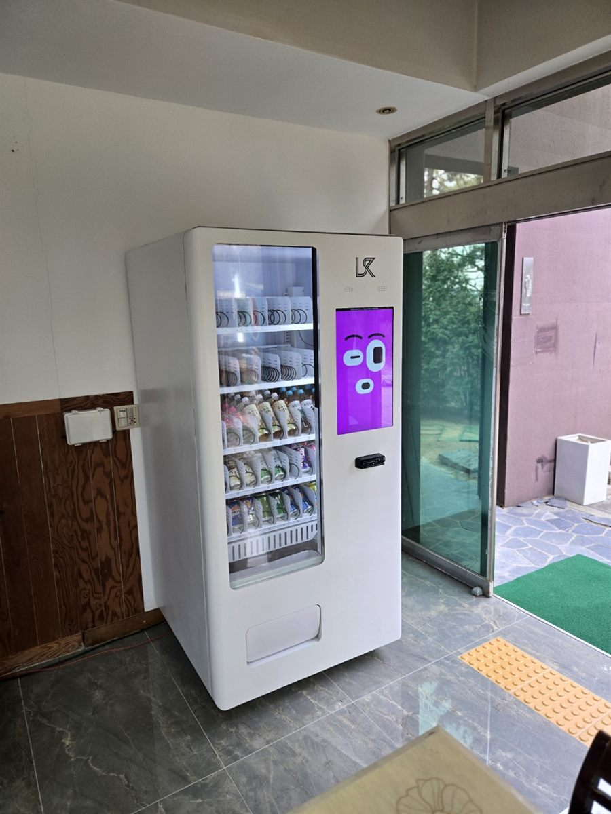

강서구 무인자판기 설치
오피스텔 1층 로비 출입구 음료·스낵 자판기

업무용 오피스텔 로비는 파는 시간이 아주 짧은 자리입니다. 주거 건물처럼 밤새 팔리는 곳이 아니라, 아침 출근 무렵과 점심 직후, 그리고 퇴근 직전 이 세 구간에 판매가 몰립니다. 엘리베이터를 기다리는 30초가 실제 영업 시간인 셈입니다. 그래서 대수보다 자리의 위치가 결과를 거의 다 결정합니다.
강서구에서 들어온 이번 문의도 먼저 잰 것은 세대 수가 아니라 출입문에서 엘리베이터까지의 동선이었습니다. 그 선을 가로막으면 민원이 생기고, 그 선에서 너무 비껴나면 아예 눈에 들어오지 않습니다. 결국 문을 열고 들어와 고개를 돌렸을 때 자연스럽게 보이면서, 사람이 서 있어도 통행에 걸리지 않는 폭이 나오는 벽면을 골랐습니다.
강서구 오피스텔 로비에 맞는 구성
업무형 건물은 주거형과 팔리는 물건이 다릅니다. 늦은 밤 생수가 아니라 아침 커피와 오후의 탄산이 중심입니다. 캔커피와 컵커피 계열을 가장 잘 보이는 칸에 두고, 이온음료와 탄산을 그 아래로 내렸습니다. 간식은 자리에서 조용히 먹을 수 있는 소포장 위주로만 채웠습니다. 냄새가 강하거나 부스러기가 많이 떨어지는 품목은 사무실 건물에서 불만이 먼저 나옵니다.
가격은 건물 밖 편의점과 비슷한 선으로 맞추시길 권합니다. 오피스텔 입주자는 매일 같은 기계를 지나는 사람이라 몇백 원 차이도 금세 알아봅니다. 결제는 카드와 삼성페이·카카오페이·QR을 모두 열어 두었습니다. 사원증과 휴대폰만 들고 내려오는 경우가 많아, 현금함은 아예 쓰지 않는 편이 관리에도 유리합니다.
- 음료 — 캔커피·컵커피를 윗칸에, 이온음료·탄산·생수를 아래로
- 간식 — 소포장 과자·초콜릿·견과류 등 냄새와 부스러기가 적은 것만
- 결제 — 카드·삼성페이·카카오페이·QR. 현금 없이 운영
- 관리 — 시간대별 판매 내역을 휴대폰으로 확인, 품절 칸은 알림으로
좋은 점과 어려운 점
좋은 점은 수요가 처음부터 예측된다는 것입니다. 주거형 자리가 습관이 붙을 때까지 몇 주를 기다려야 하는 것과 달리, 업무용 건물은 입주 사무실이 이미 채워져 있으면 첫 주부터 팔리는 시간대가 뚜렷하게 나옵니다. 보충 주기와 품목을 조정하기도 훨씬 쉽습니다. 건물 관리 쪽에서도 별도 인건비 없이 편의 시설을 하나 붙이는 셈이라 협의가 비교적 수월한 편입니다.
어려운 점도 짚어야 합니다. 첫째, 주말과 공휴일은 거의 팔리지 않습니다. 주 5일만 도는 자리라고 보고 기대치를 잡으셔야 합니다. 둘째, 로비는 건물 전체의 공용 공간이라 관리사무소·입주자대표회의 동의가 먼저 필요한 경우가 많습니다. 자리를 정해 놓고 나중에 옮기게 되면 서로 번거로워지니, 설치 전에 서면으로 자리와 기간을 정리해 두는 편이 낫습니다. 셋째, 로비는 바닥재와 마감이 깔끔한 곳이라 전선이 그대로 보이면 눈에 띕니다. 콘센트 위치를 미리 확인하고, 필요하면 몰딩으로 정리한 뒤 설치합니다.
강서구, 이런 자리가 잘 됩니다
강서구는 업무 수요와 주거 수요가 한 구 안에 같이 있는 지역입니다. 마곡동 일대는 업무단지와 지식산업센터, 그에 붙은 오피스텔이 함께 들어서 있어 평일 낮 인구가 두껍습니다. 내발산동·외발산동과 발산역 주변도 상업시설과 업무시설이 섞여 있어 로비형 자리가 자주 나옵니다. 등촌동과 염창동은 9호선 역세권을 낀 소형 오피스텔이 많아 아침 시간대 수요가 특히 뚜렷합니다. 공항동과 방화동 쪽은 김포공항으로 이어지는 길목이라 평일·주말 흐름이 다른 자리도 있습니다.
반대로 권하지 않는 자리는 지하 주차장 엘리베이터 앞과 후면 비상계단 쪽입니다. 통행량 자체는 있어 보여도 손에 짐을 들고 빠르게 지나가는 구간이라 멈춰 서지 않습니다. 사람이 잠깐 서게 되는 곳 — 엘리베이터 대기 지점, 로비 소파 근처, 우편함 옆이 훨씬 낫습니다.
강서구 서비스 지역
화곡동 · 등촌동 · 가양동 · 마곡동 · 내발산동 · 외발산동 · 염창동 · 방화동 · 공항동 · 우장산동 · 발산1동
강서구 전역에서 방문 상담이 가능합니다. 인접한 양천구·영등포구와 경기 김포시도 같은 담당자가 함께 다닙니다. 지역별 안내는 강서구 무인자판기 설치 안내 페이지에서 보실 수 있습니다.
강서구 무인자판기, 이렇게 시작하시면 됩니다
전화나 상담 신청으로 건물 위치만 알려 주시면 됩니다. 담당자가 직접 방문해 로비 폭과 콘센트 위치, 엘리베이터까지의 동선, 입주 사무실 성격을 확인합니다. 그 자리에 맞는 기종과 품목을 정하고 설치일을 잡으면 끝이며, 설치비는 받지 않습니다. 기계는 구입·렌탈·임대 중에서 고르실 수 있어 초기 비용을 들이지 않고 시작하셔도 됩니다.
공실이 많거나 로비 자리를 내기 어려운 건물이면 그 자리에서 솔직히 말씀드립니다. 억지로 넣어 두면 몇 달 뒤 빼게 되고, 그때 드는 품과 시간이 양쪽 모두에게 가장 아깝기 때문입니다.
※ 사진은 픽프리가 시공한 설치 사례이며, 글에 적힌 지역의 현장 사진은 아닙니다.
함께 많이 찾는 키워드
강서구 무인자판기 · 강서구 자판기 설치 · 강서구 자판기 임대 · 강서구 자판기 렌탈 · 서울 무인자판기 · 서울 자판기 설치 · 마곡동 자판기 · 화곡동 자판기 · 등촌동 자판기 · 가양동 자판기 · 염창동 자판기 · 내발산동 자판기 · 방화동 자판기 · 공항동 자판기 · 오피스텔 자판기 · 사무실 자판기 · 로비 자판기 · 지식산업센터 자판기 · 건물 입구 자판기 · 24시간 자판기 · 음료 자판기 · 스낵 자판기 · 캔커피 자판기 · 생수 자판기 · 무인키오스크 설치 · 스마트 자판기 · 카드 자판기 · 자판기 설치비용 · 자판기 창업